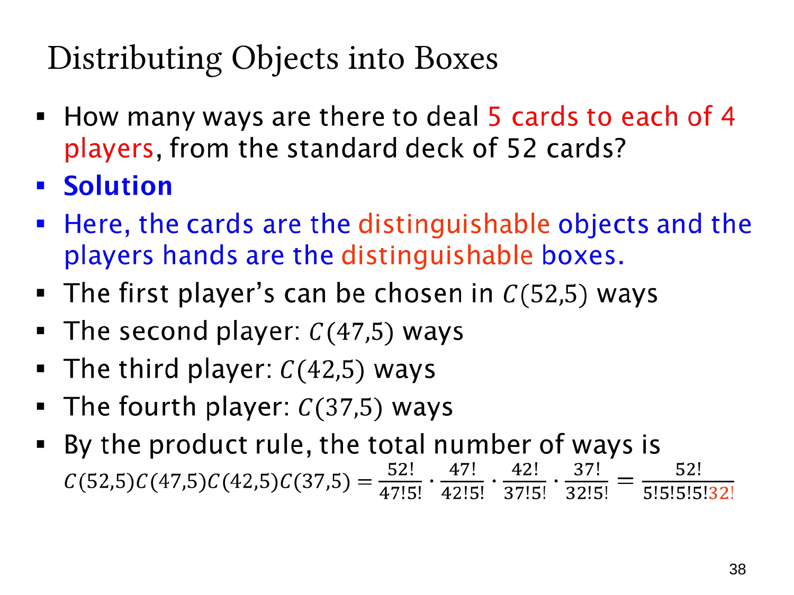

L1.6 · 第 38 页讲解原文
查看这一页课件

给四名玩家各发五张牌
52 张牌彼此不同，四名玩家也可区分，因此是不同对象分配到不同盒子（D–D）。每位玩家最终得到五张无序手牌，剩余 32 张不发出，也不记录其排列。
按固定玩家顺序选择：
- 第一人从 52 张中选五张，C(52,5)。
- 第二人从剩余 47 张中选，C(47,5)。
- 第三人从剩余 42 张中选，C(42,5)。
- 第四人从剩余 37 张中选，C(37,5)。
四步都需要完成，乘法法则给出
C(52,5)C(47,5)C(42,5)C(37,5)=(5!)432!52!.
化简时中间的 47!,42!,37! 相互消去。每个 5! 消除一位玩家手牌内的次序，32! 消除未发牌的次序。
不除以 4!，因为把两名玩家的手牌互换，会改变谁拿到哪些牌，构成不同结果。这也说明“每人的牌无序”与“玩家无区别”是两回事。
按顺序发牌只是计数手段，计算结果仍是最终分配，而不是实际逐张发牌的操作顺序。